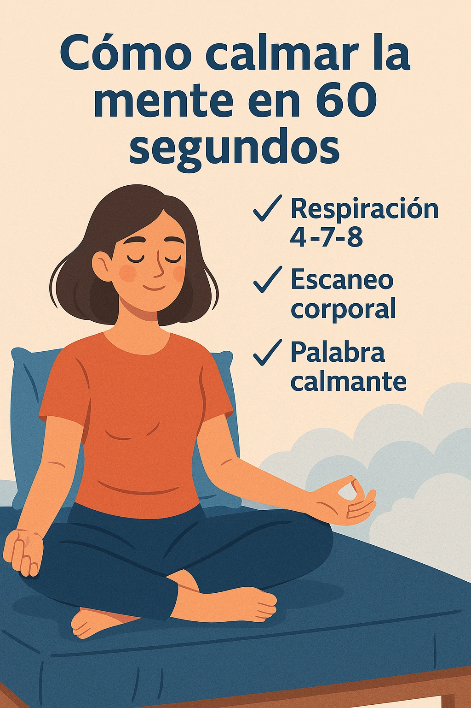
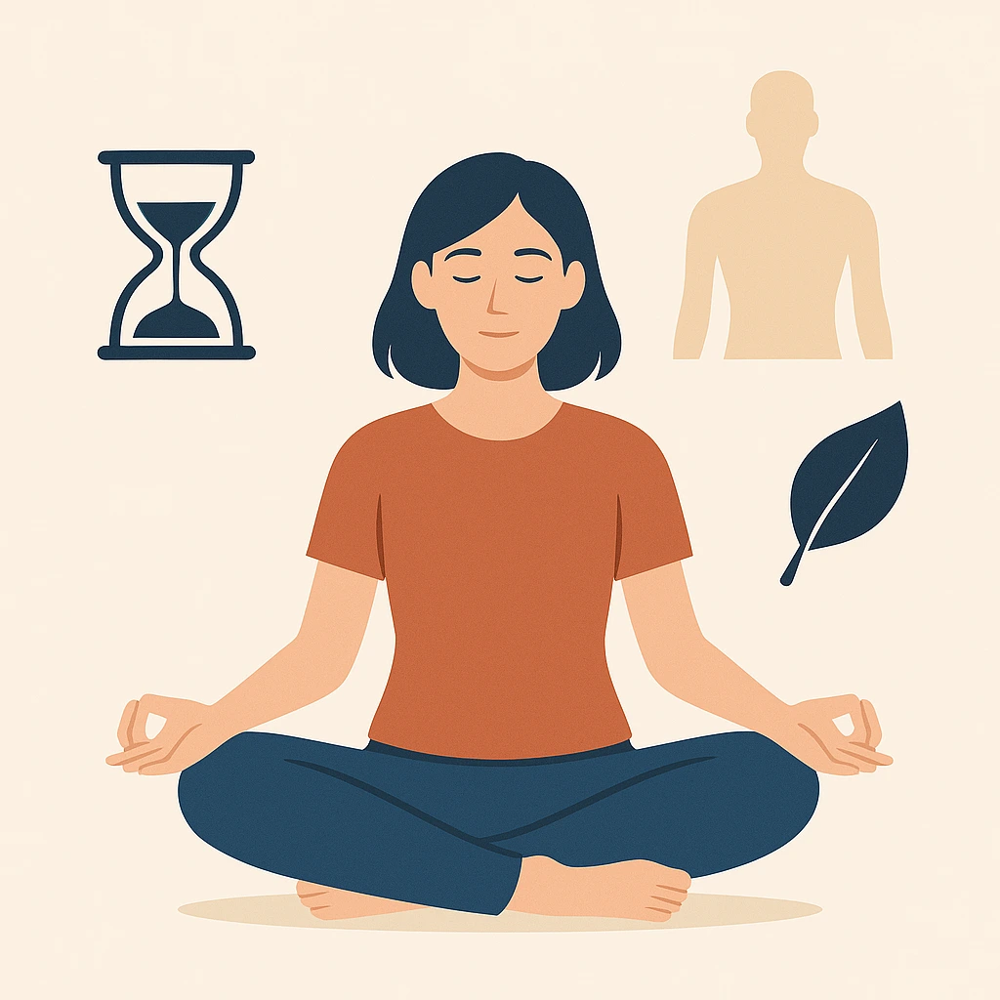

Cómo calmar la mente en 60 segundos: técnicas para relajarte rápido
Introducción: ¿Por qué necesitamos calmar la mente rápido?
En medio de la rutina, la mente se llena de ruido. A veces necesitas parar, respirar y volver al presente. Aprender cómo calmar la mente rápido es un recurso poderoso y gratis.
Beneficios de calmar la mente en solo un minuto
Un minuto bien usado puede bajar tu ritmo cardíaco, reducir tensión y devolverte foco. Practica junto a tu Guía de Respiración, tu Mindfulness Diario o tu Guía de Meditación.
3 ejercicios rápidos para calmar la mente en 60 segundos
1️⃣ Respiración 4-7-8 express
Inhala 4 segundos, mantén 7, exhala 8. Haz 2 ciclos en 60 segundos y siente la diferencia. Aprende más en la Guía de Respiración.
2️⃣ Escaneo corporal rápido
Cierra los ojos y recorre tu cuerpo mentalmente. Relaja mandíbula, cuello y hombros. Siente la respiración y suelta la tensión.
3️⃣ Anclaje mental: palabra calmante
Repite mentalmente una palabra como “paz” o “calma”. Cada repetición desactiva pensamientos intrusivos. Funciona mejor con práctica diaria.
Cuándo usar estas técnicas para calmar la mente rápido
- Justo antes de una situación estresante.
- Si notas pensamientos acelerados.
- Antes de dormir, junto con la Guía para dejar de sobrepensar.
Errores comunes al intentar calmar la mente rápido
- Esperar milagros sin práctica constante.
- Forzar la mente a quedarse en blanco.
- Frustrarse si hay distracciones.
Cómo complementar estas técnicas con otras prácticas
Para resultados duraderos, combina estas técnicas con meditación guiada, un journal para la ansiedad o crea un rincón de paz en casa.
Preguntas frecuentes sobre calmar la mente rápido
¿Realmente funciona en 1 minuto? Sí, con práctica.
¿Dónde puedo hacerlo? En casa, trabajo o transporte.
¿Cuántas veces al día? Las que necesites.
Conclusión: Tienes 60 segundos, úsalo bien
Ahora ya sabes cómo calmar la mente rápido. No necesitas nada más que tu respiración y 60 segundos de enfoque.